O método pra criar, hospedar e entregar sites profissionais sem pagar hospedagem, sem saber programar e sem depender de plataformas caras.
Te venderam uma mentira: a de que pra criar e vender sites você precisa primeiro passar meses aprendendo a programar, e depois pagar todo mês por hospedagem e ferramentas.
Eu acreditei nessa mentira por muito tempo. Comecei pagando plataforma que cobrava por crédito — quando eu mais precisava entregar, os créditos acabavam e eu tinha que pagar mais. Testei hospedagem mensal que comia minha margem antes mesmo do cliente pagar. E toda vez que eu travava, vinha aquela voz: "é porque você ainda não sabe programar de verdade".
Até que eu montei um caminho diferente. Um fluxo onde eu crio o site visualmente, ajusto com inteligência artificial, publico de graça e entrego pro cliente um link profissional no ar — sem pagar um centavo de hospedagem e sem escrever código do zero.
Esse fluxo virou o motor da minha agência, a MX Digital. Já entreguei sites pra psicólogas, terapeutas, esteticistas e empresas com ele. E o melhor: ele é simples o suficiente pra você aplicar ainda hoje, mesmo começando do absoluto zero.
Ao terminar de ler, você vai ter criado e publicado seu primeiro site profissional no ar, com domínio funcionando, gastando R$0 de hospedagem. Não é teoria. É pra fazer junto.
Leia com o computador do lado. Cada capítulo é uma etapa pra executar.
MX · 03Antes de mostrar o método, preciso que você enxergue exatamente o que está te segurando. São três armadilhas — e provavelmente você está em pelo menos uma delas.
Ferramentas como o Lovable e similares são incríveis pra começar. O problema aparece depois: você cria no impulso, gosta do resultado, mas quando vai ajustar de verdade ou entregar pra um cliente, esbarra no limite de créditos. Aí você paga assinatura. Os créditos acabam de novo no meio de um projeto. E você fica refém de um custo fixo que existe antes de o cliente te pagar.
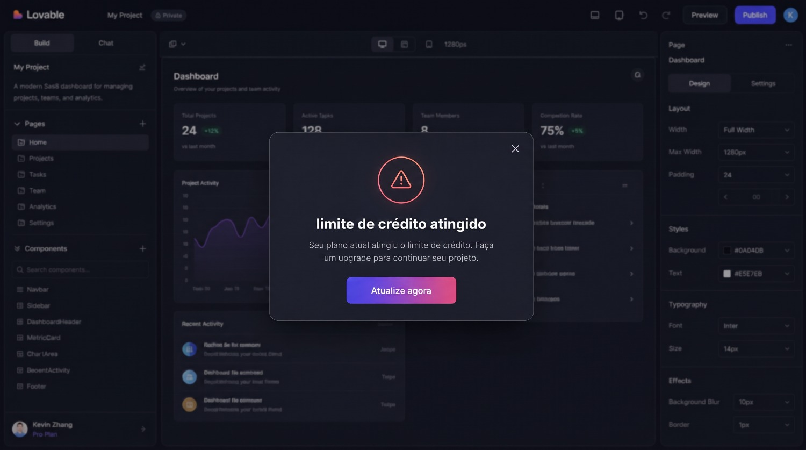
O modelo antigo manda você contratar hospedagem paga pra colocar qualquer site no ar. Parece pouco — R$15, R$30 por mês — mas multiplique por cada cliente, some o domínio, o e-mail, os add-ons, e de repente você está pagando mais do que ganha nos primeiros meses. Pior: se o cliente atrasa, o custo continua correndo pra você.
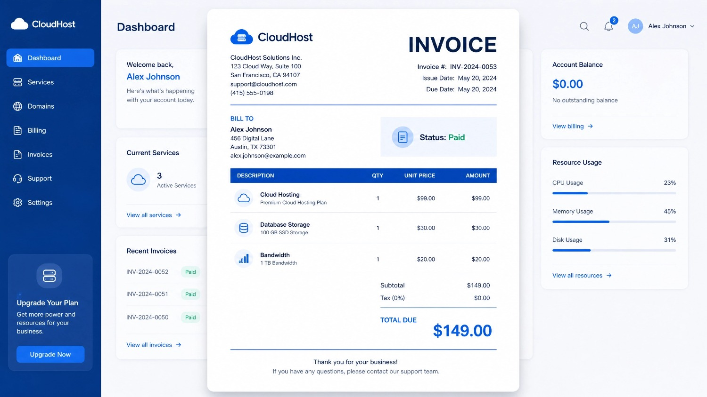
Essa é a mais cruel, porque parece nobre. "Estuda HTML, CSS, JavaScript, um framework, aí sim você cobra." Resultado: a pessoa passa 6 meses estudando, não fatura nada, desanima e desiste — bem antes de entregar o primeiro site real.
A verdade incômoda: seu cliente não está pagando pelo seu código. Ele está pagando por um site bonito, no ar, que traz cliente pra ele. Como você chega nesse resultado é problema seu — e existe um caminho muito mais curto.
No modelo antigo, antes do primeiro cliente pagar, você já gastou com plataforma + hospedagem + tempo de estudo. No método deste guia, esse número é zero. Você só investe quando o cliente já está fechando.
O método inteiro roda sobre quatro ferramentas. Três são 100% gratuitas. A quarta você provavelmente já usa pra outras coisas. Juntas, elas substituem tudo que você pagava antes.
É onde o site nasce. Você descreve o que quer em português normal e ele monta o layout pronto, bonito e responsivo. Sem abrir editor de imagem, sem template engessado. É o substituto direto das plataformas que cobravam crédito.
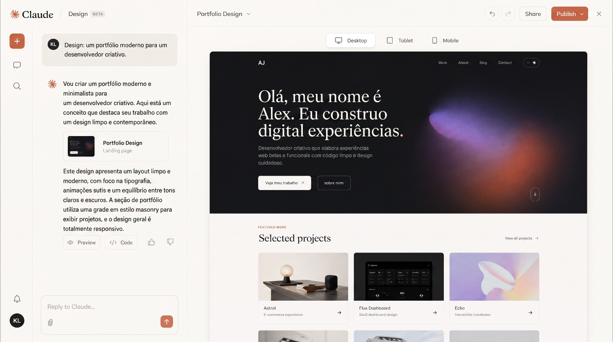
É quem transforma o design em código de verdade e faz qualquer ajuste que você pedir — trocar uma cor, mexer no espaçamento, adicionar uma seção — tudo conversando em português, direto no editor.
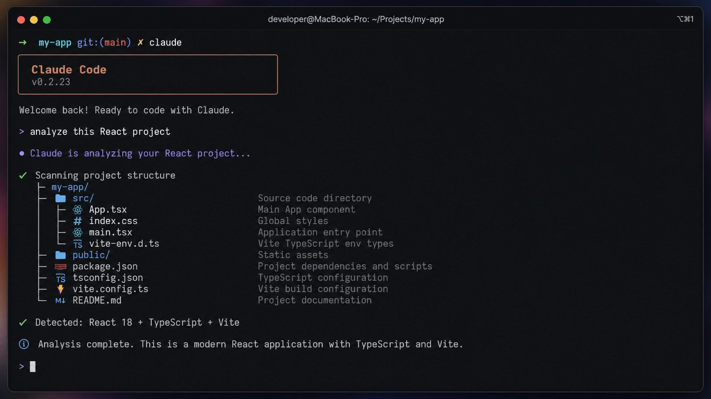
É onde o código do site fica guardado e versionado, de graça. Funciona como uma ponte: o que você salva ali, a hospedagem pega automaticamente.
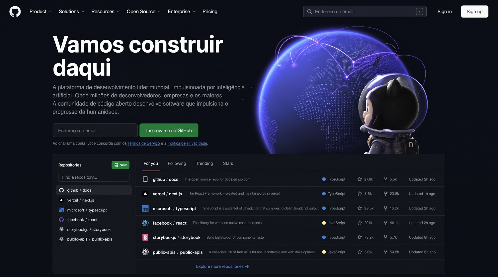
É aqui que mora a virada de chave. A Vercel coloca seu site no ar de graça, com link profissional, certificado de segurança e velocidade absurda. Toda vez que você atualiza o código no GitHub, ela republica sozinha. Zero de hospedagem, pra sempre.
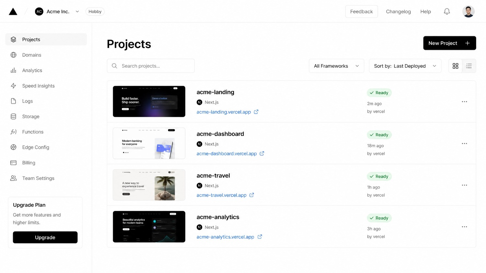
| Ferramenta | Faz o papel de | Custo |
|---|---|---|
| Claude Design | Designer | Incluso no Claude |
| Claude Code | Programador | Incluso no Claude |
| GitHub | Versionamento | R$ 0 |
| Vercel | Hospedagem | R$ 0 |
| Domínio (opcional) | Endereço próprio | ~R$40/ano |
O domínio é opcional — você pode entregar no link gratuito da Vercel e só comprar o domínio quando o cliente quiser o endereço próprio.
MX · 05Essa parte você faz uma única vez. Depois de configurado, vale pra todos os sites que você criar dali pra frente. Reserve 20 minutos e siga na ordem.
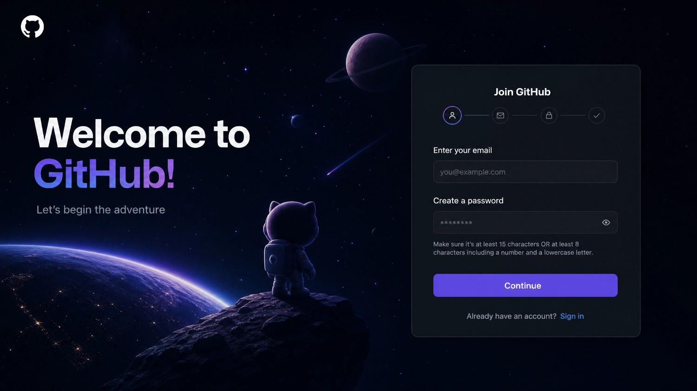
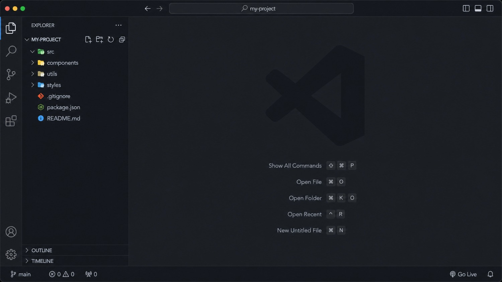
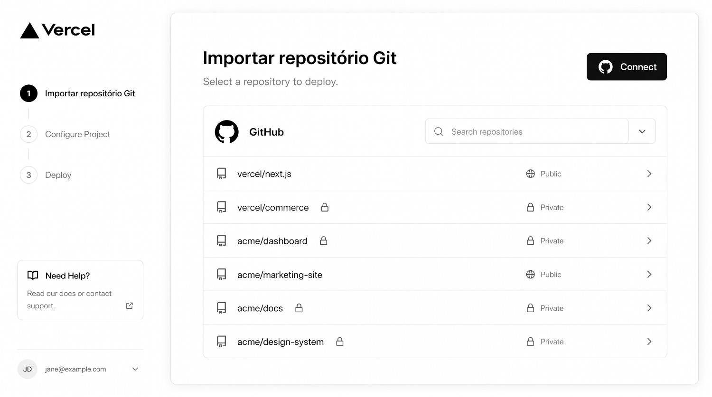
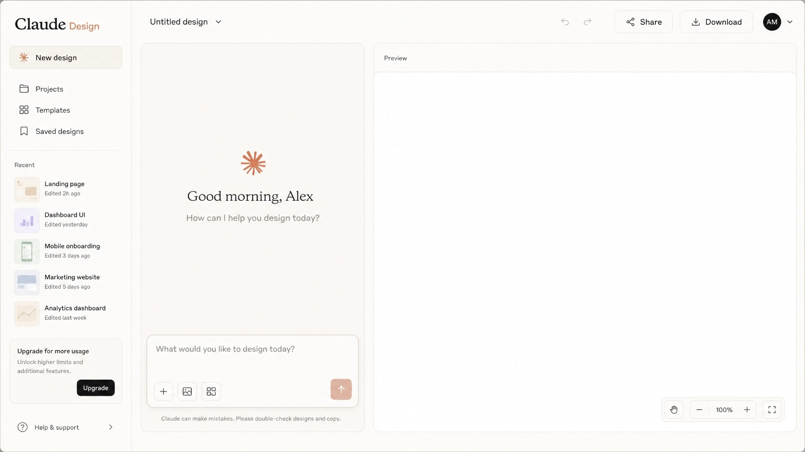
Sempre entre na Vercel usando o login do GitHub. Isso liga as duas plataformas de uma vez e elimina configuração chata depois. É o segredo que faz o site publicar sozinho a cada atualização.
Chegou a parte divertida. Aqui o site nasce — e o segredo de um bom resultado está em como você descreve o que quer.
Antes do design, crie um repositório novo e vazio no GitHub (botão "New" → dê um nome, ex: site-maria-psicologa → "Create repository"). É a pasta onde tudo vai morar. Deixe ele aberto, voltaremos nele.
No Claude Design, selecione o modo de alta fidelidade e descreva o site com o máximo de contexto: para quem é, o que a pessoa faz, o tom (elegante, moderno, acolhedor), as cores e as seções que você quer. Quanto mais específico, melhor o primeiro resultado.
"Crie uma landing page elegante e moderna para uma psicóloga chamada Maria, especialista em ansiedade. Tom acolhedor e profissional, cores em tons de verde-sálvia e off-white. Seções: topo com nome e chamada de autoridade + botão de WhatsApp; selos de confiança; cards de serviços com foto de fundo; sobre a profissional com foto; depoimentos; e rodapé com Instagram e WhatsApp. Mobile-first."
Repare num detalhe que faz diferença: peça sempre cards de serviço com foto de fundo, não só ícones. É o que separa um site amador de um profissional.
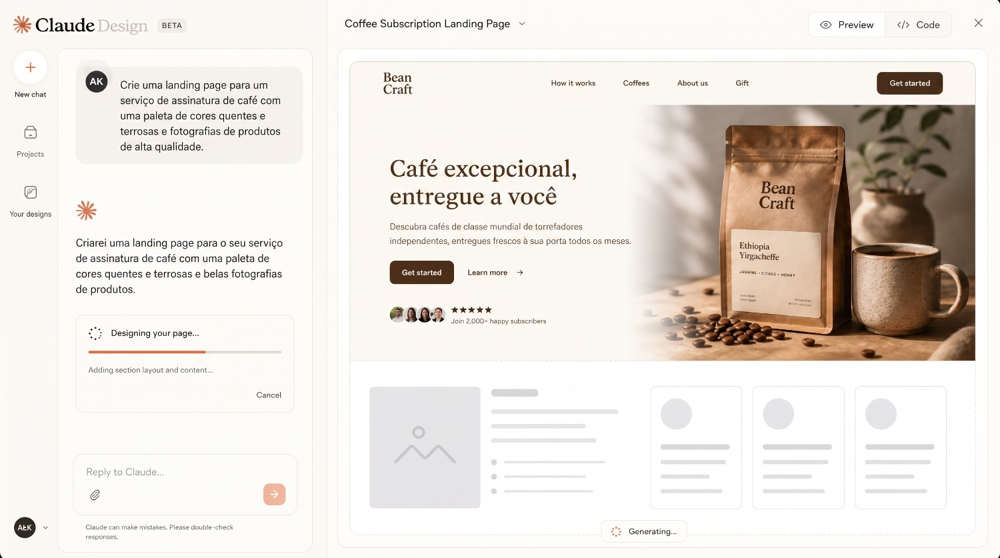
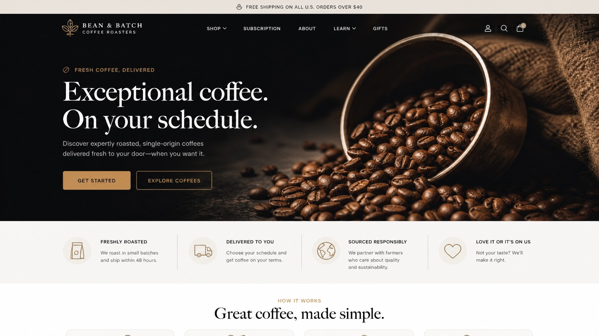
Não gostou de algo? Peça a mudança em português: "deixa o topo mais escuro", "troca essa foto", "aumenta o título". Itere até o layout ficar do jeito que você quer antes de avançar. Se já tiver as fotos reais do cliente, insira agora — o site já sai pronto.
MX · 07Você tem o design pronto. Agora vamos transformá-lo em um site de verdade, editável, no seu computador. É aqui que a maioria acha que precisa saber programar — e é exatamente aqui que você vai provar que não precisa.
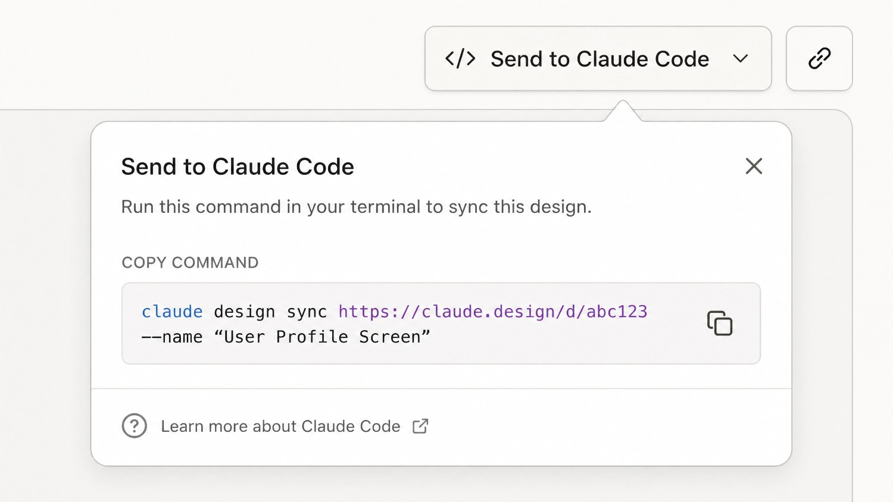
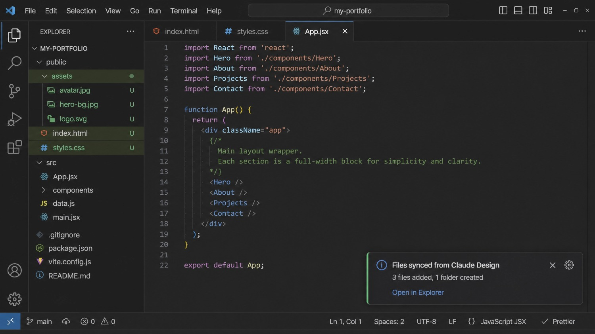
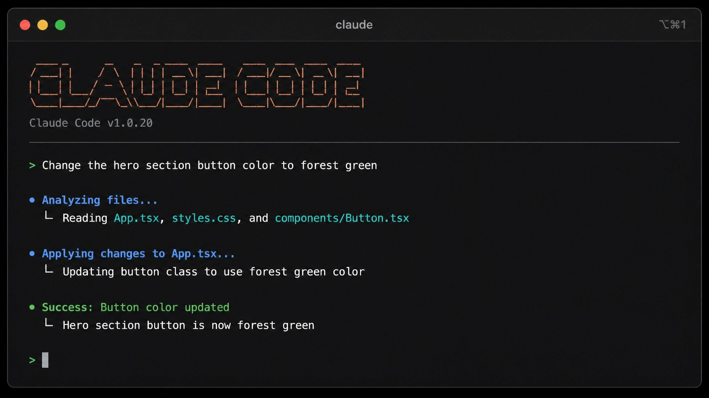
Você não está escrevendo código. Você está dirigindo quem escreve. Seu trabalho é saber o que pedir e ter bom gosto pra avaliar o resultado — e isso você já tem.
O site está pronto no seu computador. Faltam dois passos pra ele estar no ar, acessível pra qualquer pessoa do mundo — sem pagar hospedagem.
No próprio VS Code (ou pedindo pro Claude Code), envie os arquivos pro repositório com um commit e um push pra branch principal (a main). Em segundos, todo o seu site está salvo e versionado no GitHub, de graça.
Na primeira vez de cada projeto: entre na Vercel → "Add New" → "Project" → importe o repositório que acabou de subir. Em "Framework" escolha "Other", deixe os campos de build vazios e clique em "Deploy". Em menos de um minuto, você recebe um link no ar.
A partir daí, é automático: toda vez que você atualizar o código no GitHub, a Vercel republica o site sozinha. Você nunca mais mexe nessa parte.
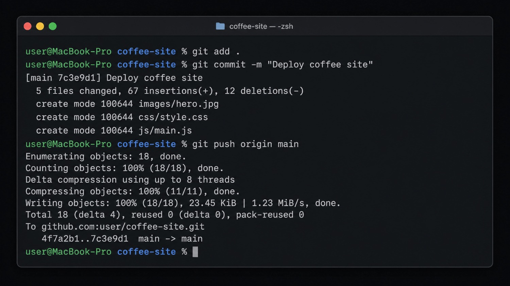
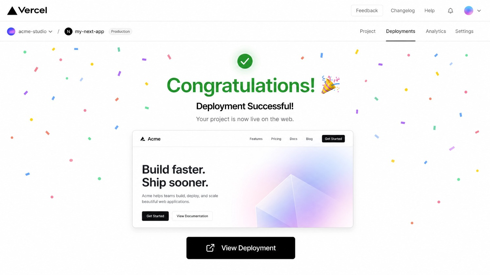
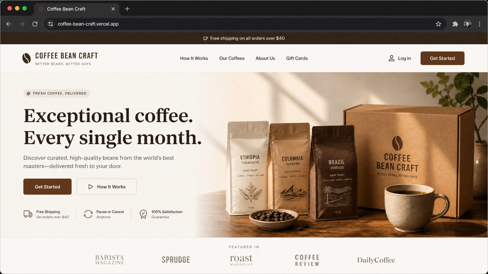
Quando o cliente quiser um endereço próprio (ex: mariapsicologa.com.br), é simples: ele compra o domínio no Registro.br, você adiciona o domínio no projeto da Vercel, configura os registros DNS que ela mostra e pronto. A Vercel não cobra nada pra conectar domínio próprio.
Se você chegou até aqui executando, você tem um site profissional no ar agora, com custo de hospedagem igual a zero. Esse era o objetivo do guia. Mas tem um detalhe que muda tudo — vira a página.
Você acabou de aprender a parte técnica. E só por isso já está na frente de 90% das pessoas que ficam presas estudando framework e nunca entregam nada.
Mas vou ser honesto com você, porque é o que eu gostaria que tivessem me dito no começo: saber criar o site é só metade do jogo.
A outra metade — a que realmente coloca dinheiro no seu bolso — é o que este guia não tem espaço pra ensinar a fundo:
Foi juntando essas duas metades — o método técnico + a parte comercial — que eu transformei isso na MX Digital e comecei a fechar clientes de verdade.
Na Mentoria MX Digital eu pego você pela mão, ao vivo, do setup ao primeiro cliente pagante — incluindo precificação, prospecção e fechamento. Grupo pequeno, acompanhamento de perto.
A mentoria é onde o método vira faturamento. Vagas limitadas pra grupos pequenos.
Quero conhecer a Mentoria MX Digital →© MX Digital · Lajeado/RS · Este material é gratuito. Proibida a revenda.